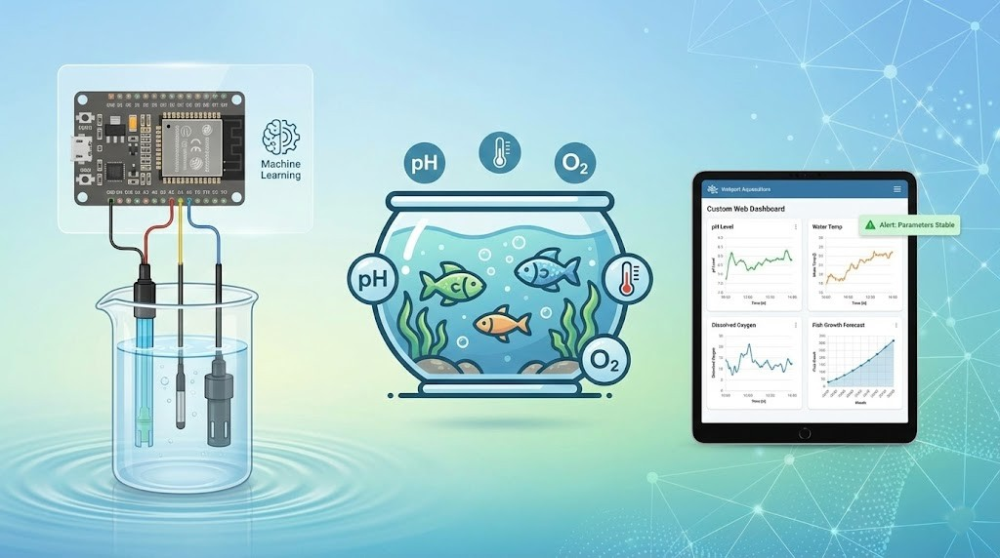

Back
to Portfolio

Project Overview
Developed an intelligent system for monitoring and managing aquatic environments to optimize fish growth. The project integrates traditional sensor networks with machine learning algorithms for predictive analysis.
Problem Statement
Maintaining optimal water quality is crucial for aquaculture productivity. Manual testing is labor-intensive and inaccurate, often leading to poor yield or disease outbreaks.
Methodology
- Sensors: pH sensor, DS18B20 (Water Temperature), Dissolved Oxygen sensor.
- Microcontroller: ESP32 for data collection and cloud transmission.
- Machine Learning: Python (scikit-learn) used to train a regression model on collected data to predict fish growth rates based on environmental parameters.
- Platform: Custom web dashboard for real-time monitoring.
Key Features
- Real-time Monitoring: Continuous tracking of critical water parameters.
- Predictive Analytics: ML model forecasts growth trends, enabling proactive adjustments to feeding and aeration.
- Alert System: Instant notifications via SMS/Email if parameters deviate from safe ranges.
- Data Logging: Historical data storage for long-term analysis.
Outcome
The system successfully monitored water parameters with high accuracy. The predictive model achieved an R-squared value of 0.85 in correlating environmental factors with fish growth, suggesting significant potential for yield optimization.